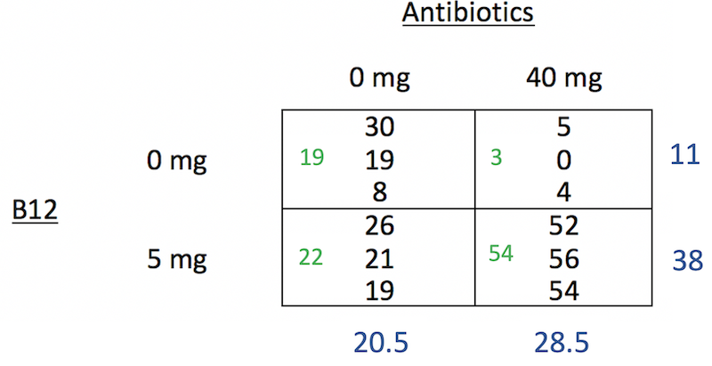

Fitting Two-Way Factorial Designs
Announcements
- Exam 1 grades posted
- HW 6 due tomorrow at 11:59p
- Office hours
- Today: Cancelled
- Tomorrow: 10:50a - 12:05p
- Where to get HW help
- Spinelli center tutoring Sun-Thurs 7-9p, Sabin-Reed 301.
- Post questions to #hw6-questions channel on Slack!
- Direct message me on Slack.
Agenda
- MSA Feedback
- MP2 Assignment
- Two-Way Factorial Design
- Interactions
- Fitting the ANOVA model
SDS 290: How’s things?
- “I am enjoying the class.”
- “Not enjoying it but it’s my last requirement for the data science major. It’s something I need to get done.”
- “Good! Probably my favorite class this semester :)”
- “I have been really enjoying this class. I feel like I am learning a lot about research methods and experiment design, and I also get to apply the skills that I used in my previous stats classes in a practical manner.”
- “It’s going okay. I don’t like having things due on Friday nights, I would prefer Sunday nights for the sake of the rest of my life and having time to work on things. Sometimes I feel confused.”
SDS 290 things going so well…
- “I really enjoy the group in-class activities that we do as a whole class. I feel like it is very easy to ask questions when I am confused. I also like working with other classmates during class time and discussing the content.”
- “I find the lectures helpful, and the homework is a good way to reinforce what we’ve learned.”
- “I liked having the freedom to make our first mini projects about whatever we wanted to, I like when we get to code alongside you in class and have that as a crutch to fall back on for homeworks.”
- “I think that the homework problems, group projects, and lectures provide a solid background for understanding the course material.”
- “Not particularly. I’m doing okay in the class but I do it on my own. When we had in-class activities that was helpful.”
SDS 290 things not going so well
- “In-class work time is not especially helpful for me.”
- “Sometimes it’s hard to follow what’s going on in class. I wish the slides had more context in words then just pictures.”
- “I think the exam went quite poorly for me. It took me over 4 hours to complete. I felt I knew all the topics but compared to your estimated time to complete it, I was very disappointed in how long it took me.”
- “I wish we could work in pairs/groups in class a little more. Maybe even doing 1 problem from the homework in groups and going over?”
- “I think sometimes responses to homework help messages in Slack can be a little slower/late than other professors but because of the tone you set for the class I don’t ever get too worried about it.”
- “Working on the mini project in class more would be helpful, so we can ask questions to our peers and instructor.”
- “I feel that the notes are all over the place and it was pretty stressful studying for the exam. I actively take notes during class , and I do pretty good on the homework, but I feel like in terms of organization with notes on the slides, and notes written on.”
SDS 290 what you can do
- “I should stay on top of the readings more than I have been.”
- “Paying more attention in class, getting more sleep.”
- “I could go to office hours more frequently to ask questions about coding and I could also reread the textbook examples if I don’t fully comprehend the material covered in class.”
- “Asking questions in class might be a good idea too. Though, it is a little hard when I need time to digest the information to create these questions.”
- “I could definitely begin assignments earlier in the week to not feel that stress all at once later on.”
SDS 290 what I can do
- I will consider options to lighten the load for the rest of the semester.
- HW9 is cancelled!
- I will try to add in more group work in lectures.
- I will give you more in-class work time for MP2.
- I will consider re-formatting the textbook homework problems myself. (I may not be able to do this in a timely manner.)
- I will pay closer attention to the website formatting.
Warm-up: Teaching Methods
A professor wanted to compare three different teaching methods to determine how students would perceive the course: 1) instructionist, 2) inquiry-based, and 3) team-based. She randomly assigned the same class (same topic different students) from 6 different semesters to treatments. At the end of the semester students were asked to rate the course on a 5-point scale, and the average class rating was calculated.
Warm-up: Swimsuit/Sweater Study
Objectification theory (Fredrickson & Roberts, 1997) posits that American culture socializes women to adopt observers’ perspectives on their physical selves. This self-objectification is hypothesized to (a) produce body shame, which in turn leads to restrained eating, and (b) consume attentional resources, which is manifested in diminished mental performance on a math test. An experiment manipulated self-objectification by having participants try on a swimsuit or a sweater. Further, it tested 20 women and 20 men, in each condition, and found that the effects on math performance were present for women only.
Warm-up: Anxiety and Memory
A psychologist wants to study the effect of anxiety on 4 different types of memory. Twelve participants are assigned to one of two anxiety conditions: 1) low anxiety group is told that they will be awarded $5 for participation and $10 if they remember sufficiently accurately, and 2) high anxiety group is told they will be awarded $5 for participation and $100 if they remember sufficiently accurately. All subjects perform four memory trials in random order, testing 4 different types of memory. The number of errors on each trial is recorded.
MP2 Assignment
- MP2 instructions
- MP2 Group Assignments
ANOVA Source Table for Two-Way Factorial
\[{y}_{ijk}={\mu}+{\alpha}_{i}+{\beta}_{j}+{\alpha\beta}_{ij}+{e}_{ijk}\]
| Source | SS | df | MS | F |
|---|---|---|---|---|
| Treatment A | \(\sum_{i=1}^{a}bn(\bar{y}_{i..}-\bar{y}_{…})^{2}\) | \(a-1\) | \(\frac{{SS}_{A}}{{df}_{A}}\) | \(\frac{{MS}_{A}}{{MS}_{E}}\) |
| Treatment B | \(\sum_{j=1}^{b}an(\bar{y}_{.j.}-\bar{y}_{…})^{2}\) | \(b-1\) | \(\frac{{SS}_{B}}{{df}_{B}}\) | \(\frac{{MS}_{B}}{{MS}_{E}}\) |
| Interaction AB | \(n\sum_{i=1}^{a}\sum_{j=1}^{b}(\bar{y}_{ij.}-\bar{y}_{i..}-\bar{y}_{.j.}+\bar{y}_{…})^{2}\) | \((a-1)(b-1)\) | \(\frac{{SS}_{AB}}{{df}_{AB}}\) | \(\frac{{MS}_{AB}}{{MS}_{E}}\) |
| Error | \(\sum_{i=1}^{a}\sum_{j=1}^{b}\sum_{k=1}^{n}({y}_{ijk}-\bar{y}_{ij.})^{2}\) | \(ab(n-1)\) | \(\frac{{SS}_{E}}{{df}_{E}}\) |
Conditional Averages and Marginal Averages

- The numbers in blue are Marginal Averages
- The numbers in green are Conditional Averages
Confidence intervals and effect sizes
- If the interaction is significant
- Calculate CIs and effect sizes for differences in conditional averages (also called “simple effects”)
- For example, for the 0mg antibiotics condition, what’s the effect size for B12
- If the interaction is NOT significant
- Calculate CIs and effect sizes for sets of marginal averages (also called “main effects”)
- For example, what is the effect size for B12 overall?
Confidence Intervals and Effect Sizes
Confidence Intervals
\[(\bar{y_i}-\bar{y_j}) \pm t^*\cdot SD \sqrt{1/n_i+1/n_j}\]
Effect size
\[D_{ij} = \frac{(\bar{y_i}-\bar{y_j})}{SD}\]
- Where \(SD = \sqrt{MSE}\)